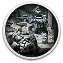

 This War of Mine
Details
 |
|
| Playtime | Not Played |
| Last Activity | Never |
| Added | 01.03.2022 20:19:31 |
| Modified | 11.01.2024 18:31:07 |
| Completion Status | Not Played |
| Library | Gog |
| Source | GOG |
| Platform | Macintosh PC (Linux) PC (Windows) |
| Release Date | 13.11.2014 |
| Community Score | 81 |
| Critic Score | 82 |
| User Score | |
| Genre | Adventure Indie Simulation |
| Developer | 11 bit studios |
| Publisher | 11 bit studios |
| Feature | Achievements Cloud Saves NVIDIA Freestyle Partial Controller Support Single Player Workshop |
| Links | Official Steam Wikia Wikipedia YouTube iPhone Android iPad Epic GOG Twitch |
| Tag | Budowanie bazy Emocjonująca Klimatyczna Niezależne Postapokaliptyczna Psychologiczna Skradanka Survivalowa W czasie rzeczywistym Wciągająca fabuła Wojenna Wytwarzanie Zarządzanie Zarządzanie zasobami Znaczące wybory |
Description

To była długa droga, jednak każda historia ma swój kres.
Minęło pięć lat od premiery This War of Mine, a my wciąż dostarczamy wam kolejnych emocji w grze, w której możecie wcielić się w rolę cywila w czasie wojny. Liczne aktualizacje i dodatki poszerzyły świat gry i wypełniły go jeszcze większą liczbą trudnych doświadczeń rodem z wojennej rzeczywistości. Aby uczcić piątą rocznicę premiery, 11 bit studios z dumą prezentuje This War of Mine: Final Cut.This War of Mine: Final Cut zawiera wszystkie wypuszczone dotąd aktualizacje i darmowe dodatki, a także nowy scenariusz, ale na tym nie koniec! Wszystkie scenariusze zostały rozszerzone o lokacje z serii Stories – dostęp do nich otrzymają nawet ci, którzy nie posiadają tych DLC. Krótko mówiąc, macie teraz szansę rozegrać grę w inny sposób i stawić czoło zupełnie nowym wyzwaniom.
- Większe zmiany i nowa zawartość:
- Nowy klasyczny scenariusz
- Wszystkie lokacje z TWoM Stories dodane do klasycznej wersji gry
- Nowe zadania i wydarzenia w lokacjach ze Stories
- Odświeżone wersje wszystkich klasycznych lokacji
- Całkiem nowa postać
- Klasyczna wersja gry*
- Mniejsze zmiany i usprawnienia:
- Wersja 64- i 32-bitowa
- Obsługa formatu 21:9
- Poprawki w interfejsie 4k
- Nowe główne menu
- Dodatkowe mniejsze poprawki i usprawnienia
This War of Mine: Final Cut stanowi koniec pewnej epoki dla 11 bit studios. Posłuchajmy więc, co ma do powiedzenia dyrektor artystyczny Przemysław Marszał, który odpowiada za unikatowy styl graficzny This War of Mine: „Chcieliśmy nadać temu fenomenowi ostatni szlif. Fenomenowi, który uczynił nas tym, kim jesteśmy dziś jako zespół – zarówno pod względem twórczej odwagi, jak i przyjętego przez nas modelu biznesowego – i pomógł nam utorować dalszą drogę. Lwią częścią tego sukcesu było niesamowite wsparcie społeczności graczy – nie mieliśmy więc żadnych wątpliwości, że ta aktualizacja musi być darmowa. Final Cut jest dla nas swego rodzaju zakończeniem jedynej w swoim rodzaju serii, jaką jest This War of Mine. Pozostanie ona bliska naszym sercom i choć nie wiem, jakie pomysły przyniesie przyszłość, Final Cut to prawdziwy epilog. Twórcza część naszego zespołu, która do tej pory pracowała nad grą, zaczęła podejmować nowe wyzwania. Nie możemy się już więc doczekać tego, co nadchodzi”.
Informacje o grze
W grze „This War of Mine” nie wcielasz się w elitarnego żołnierza. Stajesz na czele grupki cywilów, starających się przeżyć w oblężonym mieście, zmagając się z brakiem żywności, lekarstw i ciągłym zagrożeniem ze strony snajperów i szabrowników. Ta gra pozwoli ci ujrzeć wojnę w zupełnie nowym świetle.Tempo rozgrywki w „This War of Mine” wyznaczane jest przez cykl dni i nocy. Za dnia snajperzy nie pozwalają ci opuścić schronienia, musisz więc skupić się na dbaniu o swoją kryjówkę – wytwarzaniu przedmiotów, handlu i opiece nad ocalałymi. Nocą zaś wysyłasz kogoś do jednej z niepowtarzalnych lokacji z zadaniem zdobycia przedmiotów, które pomogą ci przetrwać.
Podejmuj dramatyczne decyzje, kierując się własnym sumieniem. Spróbuj ocalić wszystkich lub poświęć niektórych, aby ocalić resztę. Podczas wojny nie ma dobrych i złych decyzji – liczy się tylko przetrwanie. Im szybciej to zrozumiesz, tym lepiej.
This War of Mine:
- Gra inspirowana autentycznymi wydarzeniami
- Kieruj poczynaniami ocalałych i zarządzaj schronieniem
- Wytwarzaj broń, alkohol, łóżka, kuchenki – wszystko, co pozwoli ci przetrwać
- Podejmuj decyzje, nierzadko bezlitosne i angażujące emocjonalnie
- Świat i postacie generowane są losowo za każdym razem, gdy rozpoczynasz nową grę
- Stylizowana na rysunki węglem grafika doskonale podkreśla tematykę gry